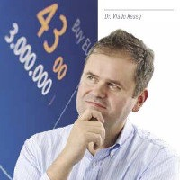

Save the Date
The annual SIGIR conference is the major international forum for the presentation of new research results, and the demonstration of new systems and techniques, in the broad field of information retrieval (IR). The 43rd ACM SIGIR conference, to be held in Xi'an, China, welcomes contributions related to any aspect of information retrieval and access, including theories and foundations, algorithms and applications, and evaluation and analysis. The conference and program chairs invite those working in areas related to IR to submit high-impact original papers for review.
Important Dates

Call for Papers
Relevant topics include, but are not limited to:
Search and Ranking: research on core IR algorithmic topics, including IR at scale.
- Queries and Query Analysis (e.g., query intent, query understanding, query suggestion and prediction, query representation and reformulation, spoken queries).
- Web Search (e.g., ranking at Web scale, link analysis, sponsored search, search advertising, adversarial search and spam, vertical search).
- Retrieval Models and Ranking (e.g., ranking algorithms, learning to rank, language models, retrieval models, combining searches, diversity and aggregated search).
- Efficiency and Scalability (e.g., indexing, crawling, compression, search engine architecture, distributed search, metasearch, peer-to-peer search, search in the cloud).
Foundations and Future Directions: research with theoretical or empirical contributions on new technical or social aspects of IR, especially in more speculative directions or with emerging technologies.
- Theoretical models and foundations of information retrieval and access.
- Novel approaches to IR (e.g., as part of a vision for important future IR scenarios)
- Ethics, Economics, and Politics (e.g., studies on ethical views and implications, economic value, political impact).
- IR with new devices (e.g., consumer devices, wearable computing, neuroinformatics, sensors, Internet-of-Things, vehicles).
Domain-Specific Applications: research focusing on domain-specific IR challenges.
- Local and Mobile Search (e.g., location-based search, mobile usage understanding, mobile result presentation, audio and touch interfaces, geographic search, location context in search).
- Social Search (e.g., social networks in search, social media in search, blog and microblog search, forum search).
- Search in Structured Data (e.g., XML search, ranking in databases, desktop search, email search, entity-oriented search).
- Multimedia Search (e.g., image search, video search, speech and audio search, music search).
- Education (e.g,. search for educational support, peer matching, info seeking in online courses/MOOCs).
- Legal (e.g., e-discovery, patents, other applications in law).
- Health (e.g., medical, genomics, bioinformatics, other applications in health).
- Other Applications and Specialized Domains (e.g., digital libraries, enterprise, expert search, news search, app search, archival search, new retrieval problems including applications of search technology for social good).
Content Recommendation, Analysis and Classification: research focusing on recommender systems, rich content representations and content analysis.
- Filtering and Recommending (e.g., content-based filtering, collaborative filtering, recommender systems, recommendation algorithms, zero-query and implicit search, personalized recommendation).
- Document Representation and Content Analysis (e.g., summarization, text representation, linguistic analysis, readability, NLP for search applications, cross- and multi-lingual search, information extraction, opinion mining and sentiment analysis, clustering, classification, topic models).
Artificial Intelligence, Semantics, and Dialog: research bridging AI and IR, especially toward deep semantics and dialog with intelligent agents.
- Question Answering (e.g., factoid and non-factoid question answering, interactive question answering, community-based question answering, question answering systems).
- Conversational systems (e.g., conversational search interaction, dialog systems, spoken language interfaces, intelligent chat systems).
- Semantics (e.g., semantic search, knowledge graphs)
- AI (e.g., deep learning for IR, embeddings, intelligent personal assistants and agents)
Human factors and interfaces: research into user-centric aspects of IR including user interfaces, behavior modeling, privacy, interactive systems, and evaluation.
- Mining and Modeling Search Activity (e.g., user and task models, click models, log analysis, behavioral analysis, modeling and simulation of information interaction, attention modeling).
- Interactive Search (e.g., search interfaces, information access, exploratory search, search context, whole-session support, proactive search, personalized search).
- Evaluation (e.g., user studies, test collections, experimental design, effectiveness measures, session-based evaluation, user engagement).
- Searching Socially (e.g., collaborative search, social tagging, crowdsourcing)
- Information Security (e.g., censorship, privacy, encryption, security in IR)
Submission Guidelines
All papers must be original and not simultaneously submitted to another journal or conference.
Submissions of full research papers must be in English, in PDF format, and be at most 9 pages (including figures) + 1 pages of references in length, in the current ACM two-column conference format. Suitable LaTeX, Word, and Overleaf templates are available from the ACM Website (use the "sigconf" proceedings template). Full research papers must describe work that is not previously published, not accepted for publication elsewhere, and not currently under review elsewhere (including as a short-paper submission for SIGIR 2020). Submissions must be anonymous and should be submitted electronically via the conference submission system.
Anonymity
Authors are required to take all reasonable steps to preserve the anonymity of their submission. The submissions document must not include author information and must not include citations or discussion of related work that would make the authorship apparent. Note however, that it is acceptable to explicitly refer in the paper to the companies or organizations that provided datasets, hosted experiments, or deployed solutions. For example, instead of stating that an experiment “was conducted on the logs of a major search engine”, the authors should refer to the search engine by name. The reviewers will be informed that it does not necessarily imply that the authors are currently affiliated with the mentioned organization. While authors can upload to institutional or other preprint repositories such as arXiv.org before reviewing is complete, we generally discourage this since it places anonymity at risk (which could result in a negative outcome of the reviewing process). Authors should carefully go through ACM’s authorship policy before submitting a paper. To support identification of reviewers with conflicts of interest, the full author list must be specified at submission time. Authors should note that changes to the author list after the submission deadline are not allowed without permission from the PC Chairs. At least one author of each accepted paper is required to register for, attend, and present the work at the conference.
ddd
Conference Organization
General co-Chairs
-
Yi Chang
Jilin University, China -
Xueqi Cheng
Chinese Academy of Sciences, China -
Jimmy Huang
York University, Canada
Vice Chair
-
Yiqun Liu
Tsinghua University, China
Program co-Chairs
-
Jaap Kamps
University of Amsterdam, Netherlands -
Vanessa Murdock
Amazon, U.S.A -
Ji-Rong Wen
Renmin University of China, China
Short Paper Program co-Chairs
-
Abdigani Diriye
Amazon, U.K. -
Jiafeng Guo
Chinese Academy of Sciences, China -
Oren Kurland
Israel Institute of Technology, Israel
Best Paper Chair
-
Norbert Führ
University of Duisburg-Essen, Germany
Test of Time Award Chairs
-
Nicholas J. Belkin
Rutgers University, U.S.A. -
Udo Kruschwitz
Universität Regensburg, Germany
Industry Chairs
-
Milad Shokouhi
Microsoft Research Cambridge, U.K. -
Luo Si
Alibaba, China -
Grace Hui Yang
Georgetown University, U.S.A
Summer School Chairs
-
Charlie Clarke
University of Waterloo, Canada -
Hang Li
ByteDance AI Lab, China
Publicity Chairs
-
Mohand Boughanem
IRIT, Toulouse, France -
Cathal Gurrin
Dublin City University, Ireland
Doctoral Consortium Chairs
-
Barbara Poblete
University of Chile, Chile -
Jerry Shen
Queen's University Belfast, U.K.
Workshop Chairs
-
Joemon M Jose
University of Glasgow, U.K. -
Jiliang Tang
Michigan State University, U.S.A.
Demonstration Paper Chairs
-
 Aixin Sun
Aixin Sun
Nanyang Technological University, Singapore -
 Jiashu (Jessie) Zhao
Jiashu (Jessie) Zhao
Wilfrid Laurier University, Canada
Tutorial Chairs
-
Andrew MacFarlane
City, University of London, U.K. -
Mounia Lalmas
Spotify, U.K.
Proceedings Chairs
-
Aijun An
York University, Canada
Sponsorship Chairs
-
Paraic Sheridan
Dublin City University, Ireland -
Dawei Yin
JD.com, China
Local Arrangement Chairs
-
Xinbo Gao
Xidian University, China
Student Volunteer Chairs
-
Qiguang Miao
Xidian University, China -
Liming Zhang
University of Macau, China
Student Travel Award Chairs
-
Yang Liu
Wilfrid Laurier University, Canada -
Mihai Lupu
Vienna University of Technology, Austria
Web Masters
-
Sadra Abrishamkar
York University, Canada -
Jiaxin Mao
Tsinghua University, China
Treasury Chairs
-
Zehua Chen
Taiyuan University of Tech., China -
Vlado Keselj
Dalhousie University, Canada
Registration Chairs
-
Vivian Hu
Ryerson University, Canada
Social Event Chair
-
George Georgopoulos
York University, Canada